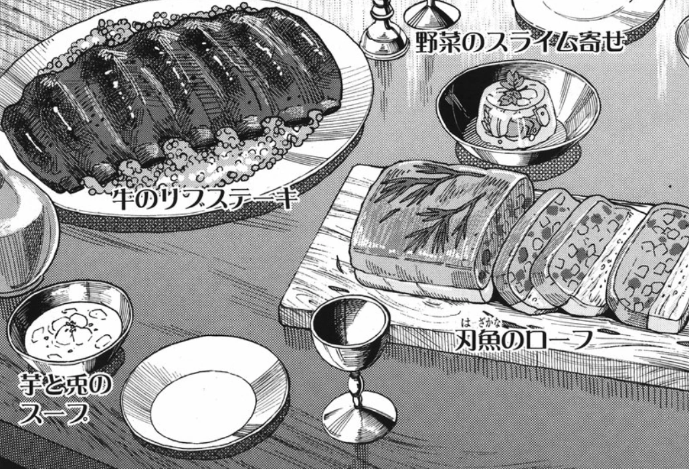
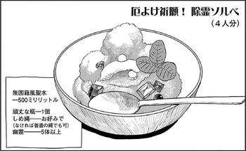

Bizarre Culinary main page
In this website you're going to learn a lot of misteryous recipes!
Recipes
Golden Castle Meal
Description
- The first recipe you're going to learn is from the manga Delicious in Dungeon/Dungeon Meshi
- It's called "Golden Castle Meal" and it's made of vegetables, slime, minotaur meat and some other ingredients.
Ingredients
- Vegetables in Slime Aspic
- Beef Rib Steak (from 5 year old Minotaur)
- Blade Fish Loaf
- Potato and Rabbit Soup

Adeptus' Temptation
Description
- The second recipe you're going to learn is from the game Genshin Impact
- It's called "Adeptus' Temptation" and it's made of ham, crab, shrimp and mushrooms.
Ingredients
- 4 Ham
- 3 Crab
- 3 Shrimp Meat
- 3 Matsutake

Exorcism Sorbet
Description
- The third recipe you're going to learn is also from the manga Delicious in Dungeon/Dungeon Meshi
- It's called "Exorcism Sorbet" and it's made of ghosts and some other ingredients.
Ingredients
- 500 ml Special Interfaith Holy Water
- 1 Sturdy jar
- 1 Sacred cordon rope(if not available use regular rope)
- 5 Ghosts
